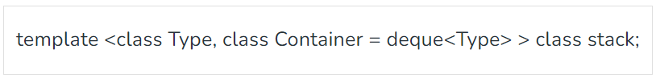
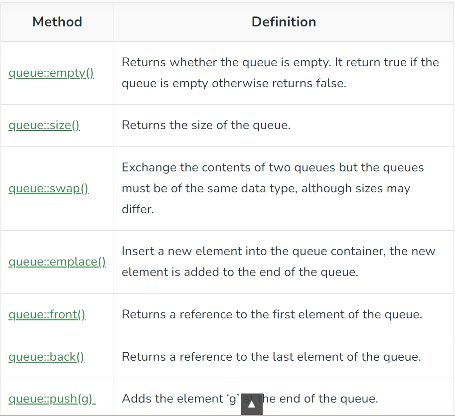

Blogs By Bahauddin :
Stack :
Stacks are a type of container adaptors with LIFO(Last In First Out) type of working, where a new element is added at one end (top) and an element is removed from that end only. Stack uses an encapsulated object of either vector or deque (by default) or list (sequential container class) as its underlying container, providing a specific set of member functions to access its elements.
If there is confusion in remembering the basic difference between stack and queue, then just have a real life example for this differentiation, for stack, stacking of books we can take the top book easily and for queue remember when you have to stand in queue front of ATM for taking out the cash, then first person near to ATM has the first chance to take out the money from ATM. So, queue is the FIFO (First In First Out) type working.
Stack Syntax:-
For creating a stack, we must include the

Type – is the Type of element contained in the std::stack. It can be any valid C++ type or even a user-defined type.
Container – is the Type of underlying container object.
Member Types:-
value_type- The first template parameter, T. It denotes the element types.
container_type- The second template parameter, Container. It denotes the underlying container type.
size_type- Unsigned integral type.
The functions associated with stack are:
empty() – Returns whether the stack is empty – Time Complexity : O(1)
size() – Returns the size of the stack – Time Complexity : O(1)
top() – Returns a reference to the top most element of the stack – Time Complexity : O(1)
push(g) – Adds the element ‘g’ at the top of the stack – Time Complexity : O(1)
pop() – Deletes the most recent entered element of the stack – Time Complexity : O(1)
Queue :
Queues are a type of container adaptors that operate in a first in first out (FIFO) type of arrangement. Elements are inserted at the back (end) and are deleted from the front. Queues use an encapsulated object of deque or list (sequential container class) as its underlying container, providing a specific set of member functions to access its elements.
Following is an example to demonstrate the queue and its various methods.
